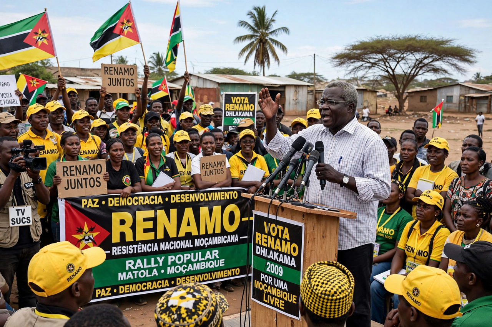

Afonso Marceta Macacho Dhlakama (1 January 1953 – 3 May 2018) was a Mozambican politician and former guerrilla leader who led RENAMO (Mozambican National Resistance), first as an insurgent movement fighting the FRELIMO government during the Mozambican Civil War (1977–1992), and then as the country's principal opposition party. He contested every Mozambican presidential election from 1994 to 2014, finishing second each time, and remained the dominant figure of the Mozambican opposition for four decades.
| Afonso Dhlakama | |
| Born | 1 January 1953, Muxúnguè, Sofala Province, Portuguese Mozambique |
|---|---|
| Died | 3 May 2018 (aged 65), Gorongosa, Mozambique |
| Party | RENAMO |
| Role | Leader of RENAMO, 1979–2018 |
| Known for | Civil war leadership; 1992 Rome peace accords; five presidential candidacies |

Dhlakama led RENAMO from 1979 until his death in 2018.
Dhlakama was born in Sofala Province, the son of a traditional chief. He briefly joined FRELIMO's liberation struggle in the 1970s but broke with the movement after independence. RENAMO had been created with Rhodesian — and later South African — backing to destabilise Marxist Mozambique; after its first leader, André Matsangaissa, was killed in 1979, Dhlakama, aged 26, took command. Under him RENAMO waged a brutal insurgency across the countryside; the war killed an estimated one million people and displaced millions more before exhaustion, drought and the end of apartheid opened the way to negotiations.
Peace talks in Rome, mediated by the Community of Sant'Egidio with the Mozambican churches, produced the Rome General Peace Accords of 4 October 1992. Dhlakama transformed RENAMO into a political party and in the 1994 elections won 37.8 per cent of the presidential vote and 112 seats in the Assembly. He remained Mozambique's perennial runner-up, polling strongly in the central and northern provinces, and alleged fraud after each defeat — most explosively in 1999, when the official margin was only about 200,000 votes.
Frustrated by exclusion from patronage and power, Dhlakama withdrew to the Gorongosa bush in 2012 and RENAMO resumed low-level armed attacks, chiefly in Sofala, from 2013 to 2016. A truce declared in December 2016 led to negotiations with President Filipe Nyusi on decentralisation and the integration of RENAMO fighters. Dhlakama died on 3 May 2018 of complications from diabetes and heart disease at his Gorongosa base, before the final settlement was signed; his successor, Ossufo Momade, concluded a definitive peace agreement in August 2019.
Dhlakama's career spans Mozambique's entire post-independence history: guerrilla commander in one of Africa's most destructive civil wars, signatory of a model peace accord, and a durable opposition leader whose movement's vote share reflected genuine regional grievances against FRELIMO dominance. Critics hold him responsible for wartime atrocities and for repeatedly militarising political disputes; supporters credit him with forcing multiparty democracy on a one-party state.